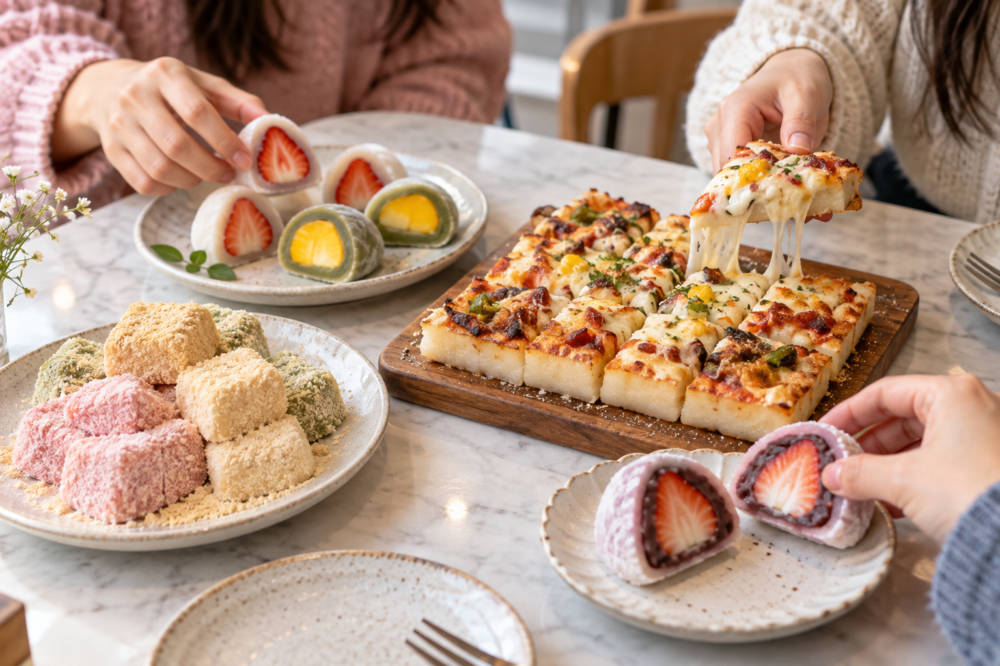
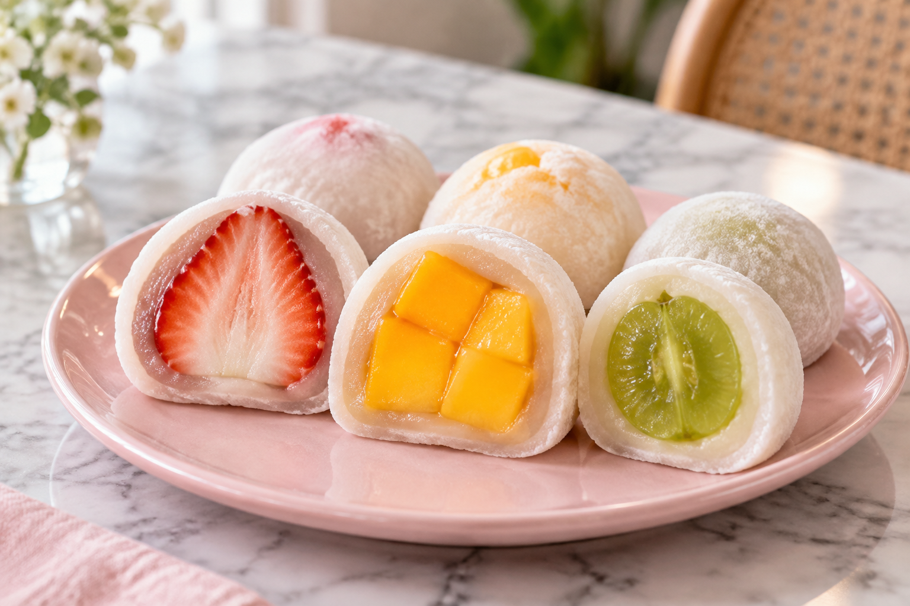
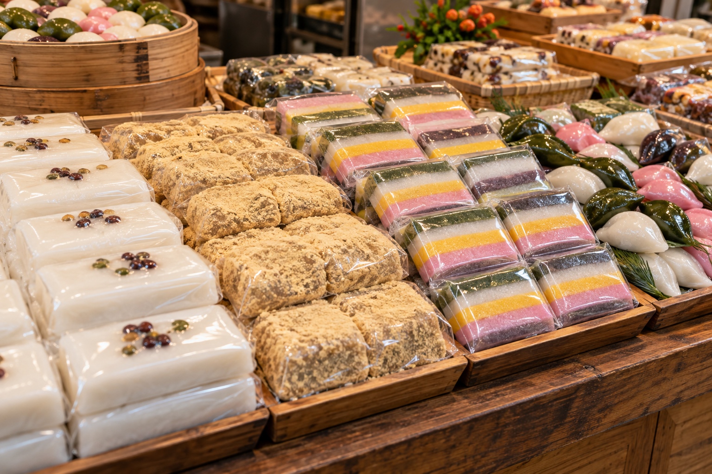

K 潮流快報：韓國傳統年糕正在大變身
從披薩米蒸糕到包著新鮮水果的糯米糕，年糕（tteok）正是韓國年輕人現在排隊也要吃的甜點。
說到韓國甜點，你會想到什麼？雪冰、奶油麵包，還是上週在你動態上爆紅的那一款？
今年秋天，韓國的答案傳統多了：年糕（tteok）。過去多半只在節日或家族聚會時才會出現的年糕，現在成了韓國年輕人的人氣甜點。
披薩米蒸糕（Pizza Seolgi）短短幾個月內，就從在地麵包店的私房發現變成社群媒體上的常客，韓國媒體甚至把逛年糕店的行程稱為「年糕朝聖」。
以下帶你看看這股潮流從何而來，以及該先嚐哪一款。

1. 披薩米蒸糕（Pizza Seolgi）：吃起來像披薩的韓國年糕
米蒸糕（Seolgi）是以米粉蒸製的傳統年糕，以鬆軟輕盈的口感聞名。
披薩米蒸糕把原本素白的米蒸糕當成披薩餅皮，鋪上番茄醬、起司和火腿。切成方塊狀，方便大家一起分享。
成品看起來既熟悉又新鮮：鬆軟的年糕、牽絲的起司和鹹香配料，一口全部吃到。
如果你以為年糕只有黃豆粉或紅豆餡口味，這款很值得一試。

2. 水果糯米糕：開店前就有人排隊的人氣甜點
水果糯米糕是韓國年糕潮流中的另一個話題主角。整顆草莓或大塊新鮮水果，先包上一層內餡，再裹上柔軟的糯米外皮。
首爾一家以水果糯米糕聞名的年糕店，已成為這波潮流中最受熱議的店家之一，一開門就大排長龍。年糕甚至進軍韓國便利商店，水果優格口味的年糕一上架很快就賣光。
從中間切開，你就會明白它為什麼在網路上這麼紅。鮮豔的水果和柔白的層次形成俐落的切面，拍起來特別好看。
草莓是經典口味，奇異果、柿子和優格奶油等新口味也不斷推出。

3. Jjondeuk：韓國年輕人為什麼愛 Q 彈口感
如果你有在關注韓國甜點潮流，大概已經到處看過這個詞：jjondeuk。它形容的是一種同時柔軟、黏糯又有彈性的口感。
年糕也有專屬的口感形容詞：
Jjondeuk-jjondeuk：柔軟黏糯又有彈性
Malang-malang：軟嫩綿柔
Jjolgit-jjolgit：恰到好處的嚼勁
正因為口感變化多，年糕才這麼容易玩出新花樣。加上水果，就成了清爽的甜點；加上起司，就變成鹹香口味；保留堅果和炒黃豆粉，就是經典的傳統風味。
對許多韓國年輕人來說，樂趣不在於某一款特定甜點，而是找到下一個想嘗試的口感。

4. 從傳統到潮流：年糕如何圈粉新世代
在韓國，年糕一直是農曆新年、中秋節（Chuseok）、婚禮和生日等重要時刻的一部分。每一種年糕都有各自的做法和意義。
白米蒸糕（Baekseolgi）常與慶祝和美好祝福連結在一起，黃豆粉年糕（Injeolmi）則以 Q 彈口感和炒黃豆粉深受喜愛。
這波新潮流並沒有取代這些經典，而是為大家早已熟悉的味道加入新口味和新造型，從街坊的年糕店一路延伸到韓國社群動態上的甜點。

5. 用 JINRO Strawberry 體驗韓國年糕潮流
韓國以外的許多韓國超市和甜點店，其實都買得到年糕。挑幾種不同的年糕，看看你最喜歡哪一種口感。
如果想搭配 JINRO，JINRO Strawberry 是很簡單的選擇。甜美的草莓風味和水果糯米糕很搭，也能為披薩米蒸糕的鹹香起司帶來清新的對比。建議冰鎮後享用。

買一盒年糕，冰一瓶 JINRO Strawberry，找出你最愛的口感吧。
想探索更多韓國美食故事與 JINRO 搭配，歡迎追蹤 JINRO Global 官方 Instagram、Facebook 和 YouTube。
本文僅供已達法定飲酒年齡的讀者閱讀。請理性、適量享用 JINRO，切勿酒後駕車。